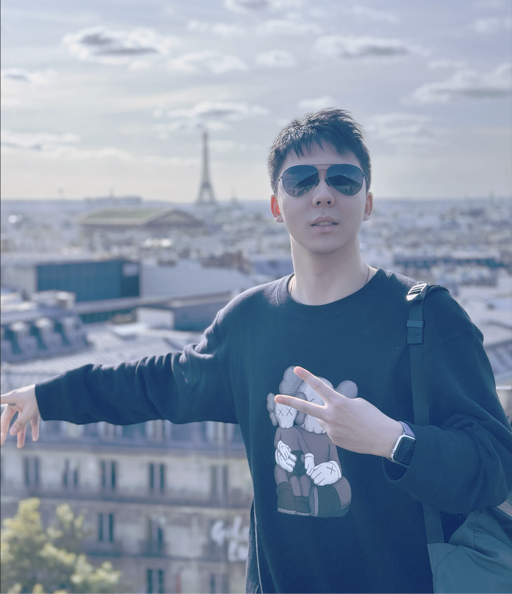
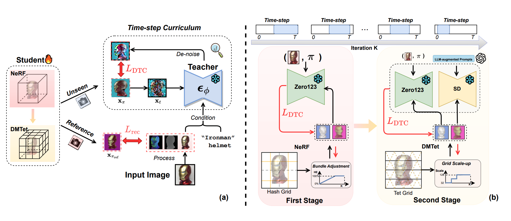

Xuanyu Yi 易炫宇Ph.D. Candidate @ Nanyang Technological University
Address: 50 Nanyang Ave, 639798, Singapore |
 |
Biography [back top]
I am currently a Ph.D. candidate in MreaL lab @ NTU, advised by Prof. Hanwang Zhang. I am also served as a research scholar in I2R, A*STAR, advised by Prof. Lim Joo Hwee . Before that, I received my Bachelor's degree from Tsinghua University, supervised by Prof. Ji Wu and closely collabrated with Prof. Yirong Wu and Prof. Demin Han. The outline of my experience is as follows:
- 01/2024 -- Present: Research Intern, 2050 Research, Skywork AI, Singapore.
- 08/2023 -- 12/2023: Research Intern, SEA AI Lab, Singapore.
- 09/2021 -- Present: Ph.D. Student in Computer Science, Nanyang Technological University, Singapore.
- 06/2020 -- 11/2020: B.S. in Computer Science, Exchange Program @ University of Southern California, Los Angeles, America.
- 08/2017 -- 07/2021: B.S. in Electronic Engineering, Tsinghua University, Beijng, China.
My research interests include representation learning, generative model, multi-modal LLM and 3D Vision. I believe that a true picture of nature is essentially a solution to Maxwell's equations. A perfect world model is actually a numerical simulation of various physical laws, such as electromagnetism and dynamics, etc. More recently, I focus on the following aspects:
- MLLM debiased learning and reasoning.
- 3D understanding, reconstruction, generation, editting and simulation.
- 3DGS-based or physics-based video generation model.
- Anything about world model.
- Spatial-aware LLM or VLM.
Latest News [back top]
- 07/2024: Two paper were accepted by ECCV 2024.
- 02/2024: Two paper were accepted by CVPR 2024.
- 09/2023: One paper was accepted by ICCV 2023.
- 10/2022: One paper was accepted by ECCV 2022 as oral presentation.
Publication [back top]
Conference
| 06 | Yuxuan Wang, Xuanyu Yi, Zike Wu, Na Zhao, Long Chen, Hanwang Zhang
View-Consistent 3D Editing with Gaussian Splatting European Conference on Computer Vision (ECCV), 2024 [Paper] [Code Coming] |
| 05 | Qingshan Xu, Xuanyu Yi, Jianyao Xu, Wenbing Tao, Yew-Soon Ong, Hanwang Zhang
Few-shot NeRF by Adaptive Rendering Loss Regularization European Conference on Computer Vision (ECCV), 2024 [Paper Coming] [Code Coming] |
| 04 | Xuanyu Yi, Zike Wu, Qingshan Xu, Pan Zhou, Joo-Hwee Lim, Hanwang Zhang
Diffusion time-step curriculum for one image to 3d generation IEEE/CVF Conference on Computer Vision and Pattern Recognition (CVPR), 2024 [Paper] [Code] |
| 03 |
Zike Wu, Pan Zhou, Xuanyu Yi, Xiaoding Yuan, Hanwang Zhang
Consistent3d: Towards consistent high-fidelity text-to-3d generation with deterministic sampling prior IEEE/CVF Conference on Computer Vision and Pattern Recognition (CVPR), 2024 [Paper] [Code] |
| 02 |
Xuanyu Yi, Jiajun Deng, Qianru Sun, Xian-Sheng Hua, Joo-Hwee Lim, Hanwang Zhang
Invariant training 2d-3d joint hard samples for few-shot point cloud recognition IEEE/CVF International Conference on Computer Vision (ICCV), 2023 [Paper] [Code] |
| 01 | Xuanyu Yi, Kaihua Tang, Xian-Sheng Hua, Joo-Hwee Lim, Hanwang Zhang
Identifying hard noise in long-tailed sample distribution European Conference on Computer Vision (ECCV), 2022 [Oral Presentation, 2.7% acceptance rate] [Paper] [Code] |
Preprint
| 02 |
Xuanyu Yi*, Zike Wu*, Qiuhong Shen*, Qingshan Xu, Pan Zhou, Joo-Hwee Lim, Shuicheng Yan, Xinchao Wang, Hanwang Zhang
MVGamba: Unify 3D Content Generation as State Space Sequence Modeling arXiv preprint arXiv:2405.02824 (Under Review) [Paper] [Code Coming] |
| 01 | Qiuhong Shen*, Zike Wu*, Xuanyu Yi*, Pan Zhou, Hanwang Zhang, Shuicheng Yan, Xinchao Wang
Gamba: Marry gaussian splatting with mamba for single view 3d reconstruction arXiv preprint arXiv:2406.06367 (Under Review) [Paper] [Code] |
Journal
| 01 | Bochun Wang*, Xuanyu Yi*, Jiandong Gao, Yanru Li, Wen Xu, Ji Wu, Demin Han
Real-time prediction of upcoming respiratory events via machine learning using snoring sound signal Journal of Clinical Sleep Medicine [Paper] |
Patent
Professional Activities [back top]
- Conference Reviewer
- IEEE/CVF Computer Vision and Pattern Recognition (CVPR), 2023, 2024.
- European Conference on Computer Vision (ECCV), 2022, 2024.
- Conference on Neural Information Processing Systems (NeurIPS), 2024.
- AAAI Conference on Artificial Intelligence (AAAI), 2023.
- International Joint Conference on Artificial Intelligence (IJCAI), 2023.
- Journal Reviewer
- IEEE Transactions on Multimedia
Honors & Awards [back top]
- A*STAR Merit Award, 2022.
- Singapore International Graduate Award, 2021.
- Silver Prize, Tsinghua University Rural Education Support, 2018.
- Tang Junyuan Scholarship Award，2017.
- Tsinghua University Leading Talent Program，2017.